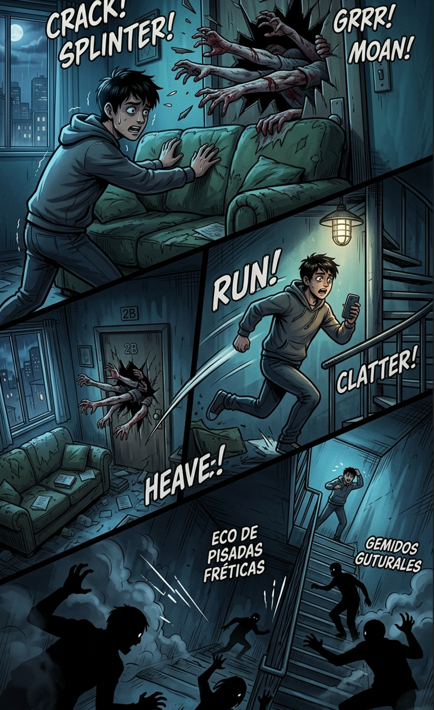

2/3
Camino actual: La Azotea Desesperada
🔊 Narración:
Decides no arriesgarte a mirar y empujas el sofá para atrancar la puerta. Segundos después, la madera cede violentamente y brazos ensangrentados se cuelan por las grietas.
Sin tiempo que perder, corres hacia las escaleras de emergencia. El eco de pisadas frenéticas y gemidos guturales resuena desde los pisos inferiores mientras subes hacia el tejado.
♦ ───── ♦